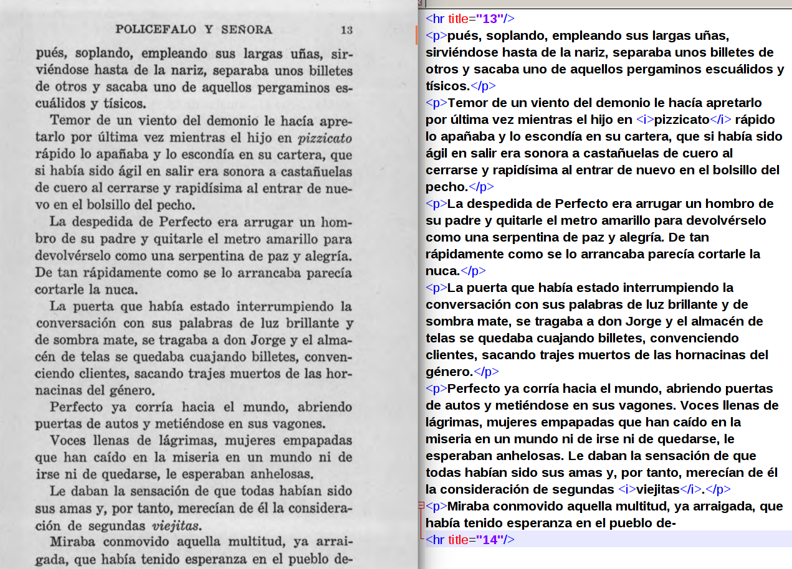

<!doctype html>
<html lang="en">
<head>
<meta charset="utf-8">
    <title>Presentación BNE</title>
<meta name="author" content="José Calvo">
<meta name="description" content="Slides">
<meta name="apple-mobile-web-app-capable" content="yes">
<meta name="apple-mobile-web-app-status-bar-style" content="black-translucent">
<meta name="viewport" content="width=device-width, initial-scale=1.0, maximum-scale=1.0, user-scalable=no, minimal-ui">
<link rel="stylesheet" href="css/reveal.css">
<link rel="stylesheet" href="css/theme/simple.css" id="theme">
<link rel="stylesheet" href="lib/css/zenburn.css">
<script>
var link = document.createElement( 'link' );
link.rel = 'stylesheet';
link.type = 'text/css';
link.href = window.location.search.match( /print-pdf/gi ) ? 'css/print/pdf.css' : 'css/print/paper.css';
document.getElementsByTagName( 'head' )[0].appendChild( link );
</script>
<!--[if lt IE 9]>
<script src="lib/js/html5shiv.js"></script>
<![endif]-->
</head>

<body>
<div class="reveal">
<div class="slides">
<section data-markdown="" data-separator="^\n---\n" data-separator-vertical="^\n--\n" data-charset="utf-8">
<script type="text/template">

<!--  vvvvv THIS IS WHERE THE CONTENT GOES! vvvvvvv  -->

### Edición digital para estudios literarios cuantitativos
<br/>

### Ejemplos y necesidades
<hr/>
<small><b>José Calvo Tello</b></small>
<br/>
<small>University of Würzburg, 2017</small>
<br/>
<hr/>
<small>Presentación en: https://morethanbooks.github.io/bne2017/</small>
<p></img>&nbsp;&nbsp;&nbsp;&nbsp;&nbsp;&nbsp;</img>&nbsp;&nbsp;&nbsp;&nbsp;&nbsp;&nbsp;</img></p>

---
## 1. Mi camino hacia los Estudios Digitales Literarios

--
## Würzburg?


--
## Würzburg!

* Christof Schöch
* Fotis Jannidis

--
## Distant reading

* Moretti

--
## Macro Análisis

* Jockers

--
## Estilometría

* Eder

--
## Grafos y redes sociales

* DLINA

--
## Topic Modeling

* Schöch

--
## Machine Learning

* Underwood

---
# 2. ¿Cómo puedo utilizar estas tecnologías para el español?

--
# ¡Necesitas textos!

* Cuanto más texto, mejor
* Cuanto más descriptivo sea su formato, mejor
* XML-TEI > HTML > TXT
* Cuanto mejor sea la calidad, mejor

--
## TextGrid


* 100 000 textos
* XML-TEI
* Open Access
* Descargable en un solo click

--
## Quijote en TextGrid


--
## ¿Digitalizaciones de Edad de Plata?


* 1 único texto en XML-TEI (www.ClasicosHispanicos.com)

---
# 3. Ejemplos de colecciones 

--
## Cervantes Virtual


--
## Cervantes Virtual


--
## ePubLibre


* <a href="https://www.epublibre.org/">ePubLibre</a>

--
## Spectators


* <a href="http://gams.uni-graz.at/archive/objects/context:mws/methods/sdef:Context/get?locale=de">Klaus-Dieter Ertler, Graz</a>

--
## ADSO


* <a href="https://github.com/bncolorado/CorpusSonetosSigloDeOro">Borja Navarro-Colorado Universidad de Alicante</a>

--
## Otros proyectos en XML-TEI

* <a href="https://www.digitisation.eu/tools-resources/language-resources/impact-es/">**IMPACT**-es diachronic corpus (Felipe Sánchez-Martínez)</a>
* <a href="https://github.com/arojascastro/fabulasmitologicas">**Fábulas** mitológicas del Siglo de Oro (Antonio Rojas Castro)</a>
* <a href="https://github.com/ghedi/bette">**BETTE** (Teresa Santa María Fernández  et al.)</a>
* <a href="http://www.clasicoshispanicos.com/">**Clásicos Hispánicos** (Pablo Jauralde et al.)</a>
* <a href="https://github.com/pruizf/disco">**DISCO** (Pablo Ruiz et al.)</a>

--
## Ejemplos: Topic Modeling 


* Análisis de desarrollo de topics a lo largo de las novelas
* Schöch, C., Henny, U., Calvo, J., Schlör, D. and Popp, S. (2016). Topic, Genre, Text. Topics im Textverlauf von Untergattungen des spanischen und hispanoamerikanischen Romans (1880-1930). Leipzig, pp. 235–38.


--
## Ejemplos: Estilometría y Cervantes


* Análisis de La conquista de Jerusalén, de autoría cervantina discutida
* *Work in progress* con Juan Cerezo Soler

--
## Ejemplos: Grafo de Evangelio de Mateo 


* Coaparición en versículos de personas y grupos
* <a href="https://github.com/morethanbooks/XML-TEI-Bible">XML-TEI Bible</a>


---
# 4. Textbox

--
## CLiGS

* Estilística computacional del género literario
* Computergestützte literarische Gattungsstilistik
* Universidad de Würzburg, Alemania
* Director: **Christof Schöch**
* **Ulrike Henny-Krahmer**
* Katrin Betz
* Albin Zehe
* Daniel Schlör
* GitHub: https://github.com/cligs

--
## Machine Learning + Edad de Plata + Novela

* Novela y subgéneros
* Edad de Plata
* Estilometría, Machine Learning
* Metadatos
* 290 novelas
* 43 autores
* \> 18 millones de palabras (tokens)

--
## De HTML a XML-TEI

* Cervantes Virtual
* ePubLibre
* Archive.org
* Gutenberg
* Abbyy
* BDH

--
## Textbox<br/> Corpus literarios en lenguas romances

* <a href="https://github.com/cligs/textbox">https://github.com/cligs/textbox</a>
* 8 corpus de textos literarios
* Español, francés, italiano y portugués
* 369 archivos
* XML-TEI 
* Creative Commons
* GitHub

--

* _Collection of 19th Century **Spanish-American Novels** (1880-1916)_, edited by Ulrike Henny-Krahmer: 24 novels
* _Corpus of **Spanish Short Stories** from 1880-1940_, edited by José Calvo Tello: 12 collections
* _Corpus of **Spanish Novels** from 1880-1940_, edited by José Calvo Tello: 39 novels
* _Collection de nouvelles françaises du dix-neuvième siècle_, edited by Stefanie Popp: 28 novellas
* _Collection de romans français du dix-neuvième siècle_, edited by Christof Schöch and Stefanie Popp: 36 novels.
* _Collection de pièces the théâtre français du dix-septième siècle_, edited by Christof Schöch: 100 plays.
* _Collection of 19th Century Portuguese Novels (1840-1910)_, edited by Ulrike Henny-Krahmer: 30 novels
* _Collection of Italian Short Stories and Novellas (1880s-1920s)_, edited by Ulrike Henny-Krahmer: 90 short stories and novellas
* _Collection of Italian Novels (1850 and 1890)_, edited by Katrin Betz and Christof Schöch: 10 novels

--
## XML-TEI


--
## Identificadores de autores y textos


--
## Metadatos


--
## Publicación

* GitHub
* Descargable en un solo click
* Creative Commons
* Archivado en Zenodo (DOI)

--
## Publicación


---
# 5. ¿Qué necesitan las HD de las bibliotecas?

--
## Cuantos más datos, mejor

* Topic Modeling
* Word2Vec
* Deep Learning
* ...

--
## Acceso a full text en TEI o HTML

* Mejor HTML que TXT. Mejor TEI que HTML
* Versión sencilla de TEI
* Encabezamientos y titulillos
* Cursivas
* ¡Cuidado!: paratextos de página (número de página, autor, título de obra)

--
## Ejemplo de TEI


--
## Ejemplo de HTML



--
##  Descarga completa o API

* Descarga de TODO en un solo click
* Texto + Metadatos
* ¿Demasiado grande? Descarga de colecciones
* Ej.: obras cuyo autor es Valle
* Ej.: textos del siglo XVIII
* Ej.: novelas del s. XVIII

--
## Sorteando derechos de autor

* Datos derivados de textos
* Listas de frecuencias
* Google Ngrams
* word2vec (word embeddings models)

--
## Intercambio con comunidad internacional de DH


* Digital Humanities Conference: México, junio 2018
* ¿Workshop sobre BNE y recursos digitales?
* Deadline para presentar workshops: enero 2018

---


---
# Bibliografía

* Calvo Tello, J. (2017). Estado de la digitalización de la Edad de Plata: un análisis cuantitativo. Revista de Humanidades Digitales, 1(0): 76–95 doi:10.5944/rhd.vol.1.2017.17089.
* Eder, M. (2013). Bootstrapping Delta: a safety-net in open-set authorship attribution. Digital Humanities 2013: Conference Abstracts. Lincoln: University of Nebraska-Lincoln, pp. 169–72 https://sites.google.com/site/computationalstylistics/preprints/m-eder_bootstrapping_delta.pdf?attredirects=0.
* Ertler, K.-D. (2013). Moralischen Wochenschriften. Graz, Austria: Universität Graz gams.uni-graz.at/archive/objects/container:mws-es/methods/sdef:Context/get?locale=de&mode=&context=es.
* Jannidis, F., Pielström, S., Schöch, C. and Vitt, T. (2015). Improving Burrows’ Delta – An empirical evaluation of text distance measures. Digital Humanities 2015 Conference Abstracts. Sydney: ADHO http://dh2015.org/abstracts/xml/JANNIDIS_Fotis_Improving_Burrows__Delta___An_empi/JANNIDIS_Fotis_Improving_Burrows__Delta___An_empirical_.html.
* Jauralde Pou, P. (2013). Clásicos Hispánicos. Würzburg: More Than Books http://www.clasicoshispanicos.com/.
* Jockers, M. L. (2013). Macroanalysis - Digital Methods and Literary History. Champaign, IL: University of Illinois Press.
* Moretti, F. (2005). Graphs, Maps, Trees: Abstract Models for a Literary History. London: Verso.
* Rojas Castro, A. (2016). Fábulas Mitológicas Del Siglo de Oro. Barcelona: Universidad Pompeu Fabra https://github.com/arojascastro/fabulasmitologicas.
* Ruiz, P., Martínez Cantón, C. and Calvo Tello, J. (2017). DISCO: Diachronic Spanish Sonnet Corpus. Madrid: UNED https://github.com/pruizf/disco.
* Santa María Fernández, M. T., Jiménez Fernández, C. M. and Calvo Tello, J. (2017). Biblioteca Electrónica Textual Del Teatro Español, 1868-1936. Universidad Internacional de la Rioja La Rioja.
* Schöch, C., Henny, U., Calvo, J., Schlör, D. and Popp, S. (2016). Topic, Genre, Text. Topics im Textverlauf von Untergattungen des spanischen und hispanoamerikanischen Romans (1880-1930). Leipzig: nisaba verlag, pp. 235–38 http://dhd2016.de/boa.pdf.
* Trilcke, P., Fischer, F. and Kampkaspar, D. (2015). Digitale Netzwerkanalyse dramatischer Texte. DHd-Tagung. Graz http://gams.uni-graz.at/o:dhd2015.v.040.
* Underwood, T. (2016). The Life-Cycle of Genres. Journal of Cultural Analytics(1) http://culturalanalytics.org/2016/05/the-life-cycles-of-genres/.
* (1999). Biblioteca Cervantes Virtual. Sp Alicante: Universidad de Alicante www.cervantesvirtual.com.
* (2006). TextGrid: Virtuelle Forschungsumgebung Für Die Geisteswissenschaften. Göttingen, Alemania: TextGrid Konsortium https://textgrid.de.
* (2013). ePubLibre. ePubLibre epublibre.org.


<!--^^^^^^^ DON'T TOUCH UNLESS YOU KNOW WHAT YOU'RE DOING :-) ^^^^^^^-->

</script>
</section>
</div>
</div>

<script src="lib/js/head.min.js"></script>
<script src="js/reveal.js"></script>
<script>
// Full list of configuration options available at:
// https://github.com/hakimel/reveal.js#configuration
Reveal.initialize({
    controls: true,
    progress: true,
    history: true,
    center: true,
    transition: 'slide', // none/fade/slide/convex/concave/zoom
    // Optional reveal.js plugins
    dependencies: [
        { src: 'lib/js/classList.js', condition: function() { return !document.body.classList; } },
        { src: 'plugin/markdown/marked.js', condition: function() { return !!document.querySelector( '[data-markdown]' ); } },
        { src: 'plugin/markdown/markdown.js', condition: function() { return !!document.querySelector( '[data-markdown]' ); } },
        { src: 'plugin/highlight/highlight.js', async: true, callback: function() { hljs.initHighlightingOnLoad(); } },
        { src: 'plugin/zoom-js/zoom.js', async: true },
        { src: 'plugin/notes/notes.js', async: true }
        ]
    });
</script>
</body>
</html>
